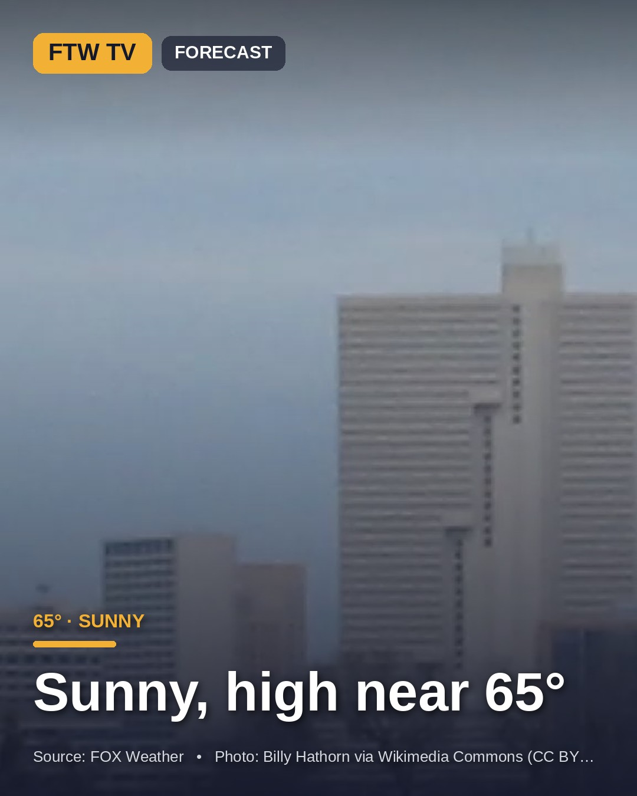
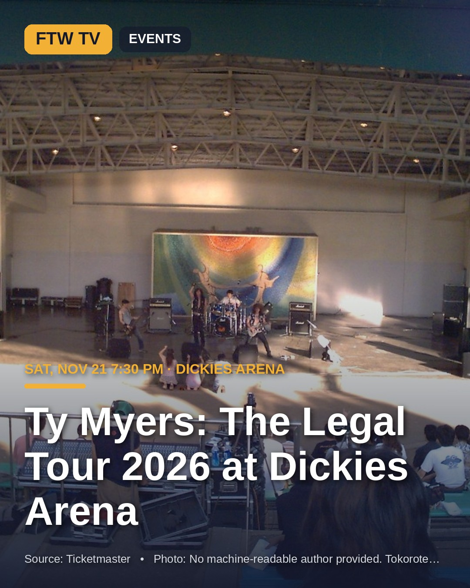
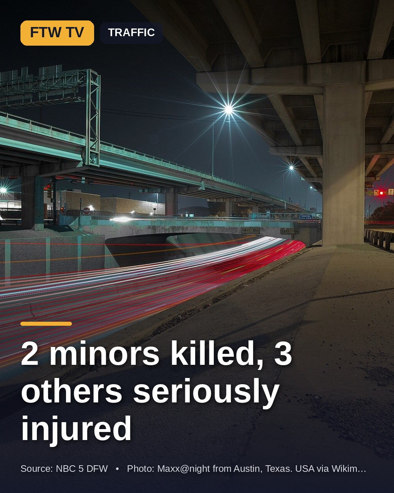
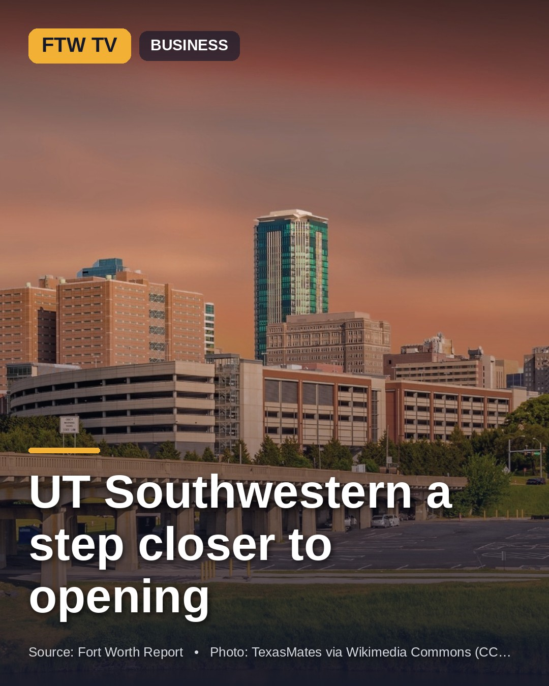
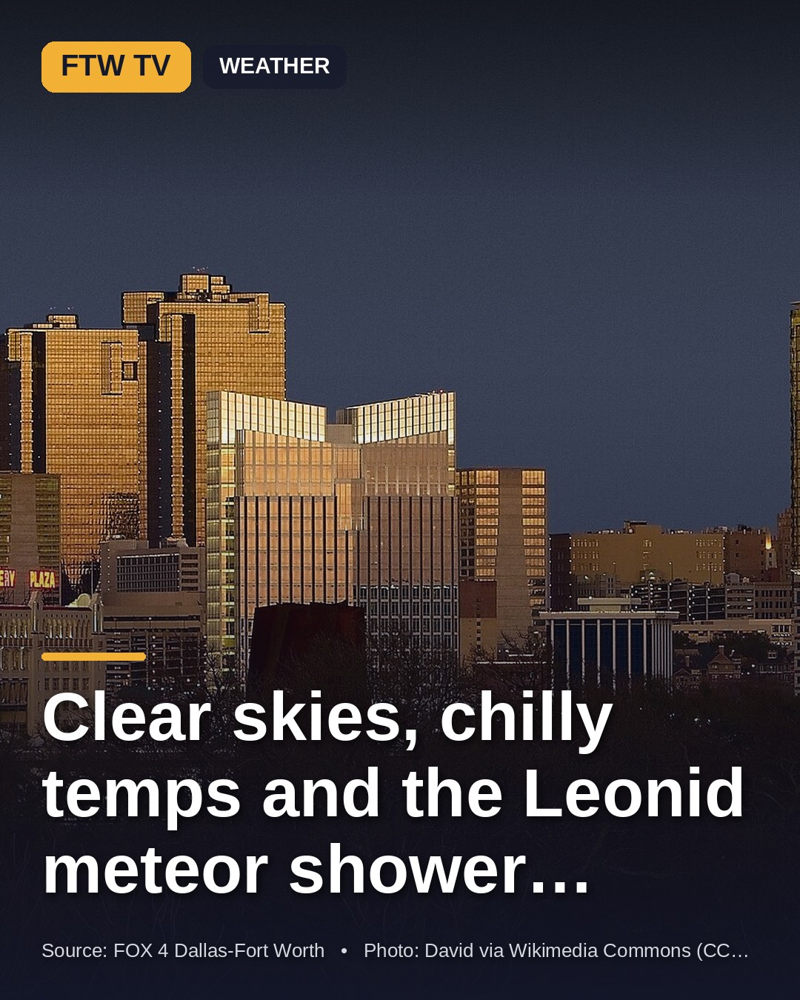

Good morning, Fort Worth ☀️
Today: Sunny, high near 65°
📍 Fort Worth, TX
Follow @FortWorthTexasTV for more 📲

👍 ❤️ 😮 ✅ written to disk (dry run)
story + scoring
{
"source": "FOX Weather",
"kind": "nws_forecast",
"score": 1.95,
"relevance": 2,
"url": "https://www.foxweather.com/local-weather/texas/fort-worth",
"image_license": "wikimedia-cc",
"image_credit": "Photo: Billy Hathorn via Wikimedia Commons (CC BY-SA 3.0)"
}This Sunday at Dickies Arena 🎟️
Women's Funkytown Showdown
Sun, Nov 22 12:00 PM
Tickets in the comments 👇
📍 Fort Worth, TX
Follow @FortWorthTexasTV for more 📲
👍 ❤️ 😮 ✅ written to disk (dry run)
story + scoring
{
"source": "Ticketmaster",
"kind": "event",
"score": 1.6209,
"relevance": 5,
"url": "https://www.ticketmaster.com/dickies-arena-tickets-fort-worth/venue/99330",
"image_license": "wikimedia-cc",
"image_credit": "Photo: WayKurat via Wikimedia Commons (CC BY-SA 3.0)"
}This Saturday at Dickies Arena 🎟️
Ty Myers: The Legal Tour 2026
Sat, Nov 21 7:30 PM
Tickets in the comments 👇
📍 Fort Worth, TX
Follow @FortWorthTexasTV for more 📲

👍 ❤️ 😮 ✅ written to disk (dry run)
story + scoring
{
"source": "Ticketmaster",
"kind": "event",
"score": 1.4369,
"relevance": 2,
"url": "https://www.ticketmaster.com/dickies-arena-tickets-fort-worth/venue/99330",
"image_license": "wikimedia-cc",
"image_credit": "Photo: No machine-readable author provided. Tokoroten assumed (base via Wikimedia Commons (Public domain)"
}🚨 2 minors killed, 3 others seriously injured after van crashes and catches fire in Fort Worth
A Toyota Sienna overturned and caught fire near a creek in north Fort Worth, not far from the Stockyards. The driver and another passenger, both minors, died at the scene; two juveniles and an 18-year-old were taken to the…
📍 Fort Worth, TX
We'll share updates as police release them. Follow @FortWorthTexasTV 📲

👍 ❤️ 😮 ✅ written to disk (dry run)
story + scoring
{
"source": "NBC 5 DFW",
"kind": "rss",
"score": 0.2753,
"relevance": 3,
"url": "https://www.nbcdfw.com/news/local/2-minors-killed-3-others-seriously-injured-after-van-crashes-and-catches-fire-in-fort-worth/4106946/",
"image_license": "wikimedia-cc",
"image_credit": "Photo: Maxx@night from Austin, Texas. USA via Wikimedia Commons (CC BY 2.0)"
}New spot alert, Fort Worth 🌮
Where to eat in Fort Worth: 5 tasty new restaurants to try
New this month: Beverly's Downtown, an underground Mexican restaurant in the basement of the historic Hogan Building at 901 Houston St. (opened Nov. 10); Flora House Cafe at the Fort Worth Botanic Garden (ribbon cutting Nov.…
📍 Fort Worth, TX
Follow @FortWorthTexasTV for more 📲
👍 ❤️ 😮 ✅ written to disk (dry run)
story + scoring
{
"source": "CultureMap Fort Worth",
"kind": "rss",
"score": 0.2057,
"relevance": 5,
"url": "https://fortworth.culturemap.com/news/restaurants-bars/where-to-eat-november-2026/",
"image_license": "wikimedia-cc",
"image_credit": "Photo: JIP via Wikimedia Commons (CC BY-SA 3.0)"
}Big news for Fort Worth 🏗️
UT Southwestern a step closer to opening of Radiation Oncology center
UT Southwestern placed the final beam on its $177 million radiation oncology center in the Fort Worth Medical District on Nov. 16, moving a step closer to the anticipated 2028 opening. The center will offer MRI-guided radiation…
📍 Fort Worth, TX
Follow @FortWorthTexasTV for more 📲

👍 ❤️ 😮 ✅ written to disk (dry run)
story + scoring
{
"source": "Fort Worth Report",
"kind": "rss",
"score": 0.1828,
"relevance": 1,
"url": "https://fortworthreport.org/2026/11/16/ut-southwestern-a-step-closer-to-opening-of-radiation-oncology-center/",
"image_license": "wikimedia-cc",
"image_credit": "Photo: TexasMates via Wikimedia Commons (CC BY-SA 4.0)"
}Fort Worth weather check 🌤️
Clear skies, chilly temps and the Leonid meteor shower peaks tonight over North Texas
Clear skies and chilly temperatures are in the forecast as the Leonid meteor shower peaks tonight. A cold front arrives Saturday night with a low chance of rain and seasonal temperatures returning by Sunday.
📍 Fort Worth, TX
Follow @FortWorthTexasTV for more 📲

👍 ❤️ 😮 ✅ written to disk (dry run)
story + scoring
{
"source": "FOX 4 Dallas-Fort Worth",
"kind": "rss",
"score": 0.5909,
"relevance": 0,
"url": "https://fox4news.com/weather/dallas-weather-clear-skies-chilly-temperatures-leonid-meteor-shower-peak",
"image_license": "wikimedia-cc",
"image_credit": "Photo: David via Wikimedia Commons (CC BY 2.0)"
}